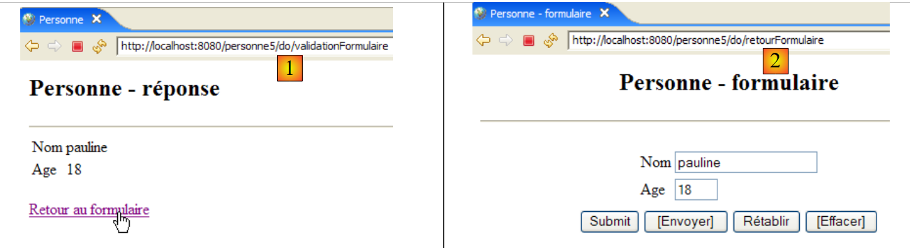
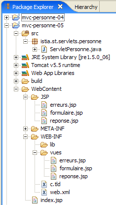

10. Webanwendung MVC [personne] – Version 5
10.1. Einleitung
In dieser Version nehmen wir zwei Änderungen vor:
Die erste betrifft die Art und Weise, wie der Client dem Server mitteilt, welche Aktion er ausführen möchte. Bisher wurde diese mithilfe eines Parameters namens [action] in der Anfrage des GET oder des POST des Clients angegeben. Hier wird die Aktion durch das letzte Element der vom Client angeforderten URL festgelegt, wie die folgende Sequenz zeigt:

Bei [1] lautet die URL, an die das Formular gesendet wurde, [/personne5/do/validationFormulaire]. Es ist das letzte Element [validationFormulaire] der URL, anhand dessen der Controller die auszuführende Aktion erkennen konnte. In [2] wurde die durch den Link [Retour au formulaire] ausgelöste Aktion POST unter der URL [/personne5/do/retourFormulaire] ausgeführt. Auch hier gibt das letzte Element [retourFormulaire] der URL dem Controller die auszuführende Aktion vor.
Wir nehmen diese Änderung vor, da dies die Methode ist, die von den gängigsten Webentwicklungs-Frameworks wie Struts oder Spring MVC verwendet wird.
Alle URLs der Anwendung werden die Form [/personne5/do/action] haben. Die Datei [web.xml] der Anwendung [/personne5] gibt an, dass diese URLs der Form [/do/*] akzeptiert:
<servlet-mapping>
<servlet-name>personne</servlet-name>
<url-pattern>/do/*</url-pattern>
</servlet-mapping>
Der Controller ermittelt den Namen der auszuführenden Aktion wie folgt:
Die Methode [getPathInfo] des Objekts [request] liefert das letzte Element der Anfrage-URL.
Die zweite Änderung betrifft die Art und Weise, wie die vom Benutzer zwischen zwei Anfrage-/Antwortzyklen vorgenommenen Eingaben gespeichert werden. Derzeit werden diese Informationen in einer Sitzung gespeichert. Diese Vorgehensweise kann Nachteile mit sich bringen, wenn es viele Benutzer gibt und für jeden von ihnen große Datenmengen gespeichert werden müssen. Denn jeder Benutzer verfügt über eine eigene Sitzung. Zudem bleibt diese noch eine gewisse Zeit nach dem Ausscheiden eines Nutzers aktiv, es sei denn, man hat dafür gesorgt, dass ihm eine Option zum Abmelden angeboten wird. Somit belegen 1.000 Sitzungen à 1.000 Byte 1 MB Speicherplatz. Dies ist zwar eine moderate Anforderung, und es gibt nur wenige Anwendungen, bei denen 1.000 Sitzungen gleichzeitig aktiv sind.
Dennoch gibt es Alternativen zur Sitzung, die weniger Speicherplatz beanspruchen, und es ist gut, diese zu kennen. Wir werden hier die Methode der Cookies verwenden. Veranschaulichen wir dies anhand eines Beispiels.
Schritt 1: Der Benutzer sendet ein Formular ab:
 |
Dieser Anfrage-/Antwortzyklus führt zu folgenden Datenaustauschen HTTP zwischen Client und Server:
[1] : [demande du client]
Dies ist ein klassischer POST. Hier gibt es nichts Besonderes zu erwähnen, außer dass der Webserver, obwohl keine Sitzung verwendet wird, dennoch eine erstellt. Dies lässt sich an dem Sitzungstoken erkennen, das der Browser in Zeile 11 an den Server zurücksendet und das er zuvor vom Server erhalten hatte.
[2]: [réponse du serveur]
Man sieht, dass in den Zeilen 3 und 4 die Header HTTP und [Set-Cookie] an den Client-Browser gesendet wurden, einer für den Namen (Zeile 3) und einer für das Alter (Zeile 4). Die Werte dieser Cookies entsprechen den in Zeile 14 der oben genannten POST und [1] übermittelten Werten.
Schritt 2: Zurück zum Formular

Dieser Anfrage-/Antwortzyklus führt zu folgenden HTTP-Austauschen zwischen Client und Server:
[1]: [demande du client]
Hier sehen wir die Anfrage POST, die durch das Anklicken des Links [Retour au formulaire] ausgelöst wurde. In Zeile 11 sehen wir, dass der Browser die empfangenen Cookies [nom, age, JSESSIONID] mittels des HTTP-Headers [Cookie] an den Server zurücksendet. Das ist das Prinzip von Cookies. Der Client sendet die Cookies, die er vom Browser erhalten hat, an diesen zurück. In diesem Beispiel erhält der Controller die Werte [pauline, 18], die er in die Felder [txtNom, txtAge] der Ansicht [formulaire] einfügen muss, die in [2] angezeigt wird.
[2]: [réponse du serveur]
Hier gibt es nichts Besonderes zu vermerken, außer der Tatsache, dass der Server in dieser Antwort keine Cookies gesendet hat. Dies hindert den Browser jedoch nicht daran, beim nächsten Datenaustausch alle vom Server empfangenen Cookies zurückzusenden, auch wenn dies keinen Zweck erfüllt. Man verringert somit die Belastung des verfügbaren Serverspeichers auf Kosten eines erhöhten Zeichenflusses im Datenaustausch zwischen Client und Server.
10.2. Das Eclipse-Projekt
Um das Eclipse-Projekt [mvc-personne-05] für die Webanwendung [/personne5] zu erstellen, duplizieren wir das Projekt [mvc-personne-04] gemäß der in Abschnitt 6.2 beschriebenen Vorgehensweise.
 |  |
10.3. Konfiguration der Webanwendung [personne5]
Die Datei web.xml der Anwendung /personne5 lautet wie folgt:
<?xml version="1.0" encoding="UTF-8"?>
<web-app id="WebApp_ID" version="2.4"
xmlns="http://java.sun.com/xml/ns/j2ee"
xmlns:xsi="http://www.w3.org/2001/XMLSchema-instance"
xsi:schemaLocation="http://java.sun.com/xml/ns/j2ee http://java.sun.com/xml/ns/j2ee/web-app_2_4.xsd">
<display-name>mvc-personne-05</display-name>
<!-- ServletPersonne -->
<servlet>
<servlet-name>personne</servlet-name>
<servlet-class>
istia.st.servlets.personne.ServletPersonne
</servlet-class>
...
</servlet>
<!-- Zuordnung ServletPersonne-->
<servlet-mapping>
<servlet-name>personne</servlet-name>
<url-pattern>/do/*</url-pattern>
</servlet-mapping>
<!-- Startdateien -->
<welcome-file-list>
<welcome-file>index.jsp</welcome-file>
</welcome-file-list>
</web-app>
Diese Datei ist bis auf einige Details identisch mit der der vorherigen Version:
- Zeile 6: Der Anzeigename der Webanwendung hat sich in [mvc-personne-05] geändert
- Zeile 18: Die von der Anwendung verarbeiteten URLs haben die Form [/do/*]. Zuvor wurde nur die URL [/main] verarbeitet. Nun gibt es so viele URLs wie zu verarbeitende Aktionen.
Die Startseite [index.jsp] ändert sich:
<%@ page language="java" contentType="text/html; charset=ISO-8859-1"
pageEncoding="ISO-8859-1"%>
<%@ taglib uri="/WEB-INF/c.tld" prefix="c" %>
<c:redirect url="/do/formulaire"/>
- Zeile 5: Die Seite [index.jsp] leitet den Client zur URL [/personne5/do/formulaire] weiter, was darauf hinausläuft, den Controller aufzufordern, die Aktion [formulaire] auszuführen.
10.4. Der Code der Ansichten
Die Ansichten [formulaire, réponse, erreurs] ändern sich kaum. Die einzige Änderung besteht darin, dass die auszuführende Aktion nicht mehr auf dieselbe Weise wie zuvor angegeben wird, als sie in einem versteckten Feld namens [action] der gesendeten Formulare definiert war. Jetzt wird sie in der Ziel-URL der gesendeten Formulare, c.a.d, im Attribut [action] des Tags <form> definiert:
[formulaire.jsp]:
...
<html>
<head>
<title>Personne - formulaire</title>
<script language="javascript">
...
</script>
</head>
<body>
<center>
<h2>Personne - formulaire</h2>
<hr>
<form name="frmPersonne" action="validationFormulaire" method="post">
...
</form>
</center>
</body>
</html>
- Zeile [13]: Der Parameter [action] des Formulars taucht wieder auf, nachdem er in früheren Versionen eine Zeit lang verschwunden war. Um den Wert dieses Attributs hier zu verstehen, muss man bedenken, dass alle von der Anwendung verarbeiteten URLs die Form [/do/action] haben. In der Zeile [13] hat das Attribut [action] den Wert einer relativen URL (die nicht mit / beginnt). Daher ergänzt der Browser diese URL mit der URL der aktuell angezeigten Seite, also zwangsläufig eine URL der Form [/do/action]. Das letzte Element wird durch die relative URL des Attributs [action] des Tags <form> ersetzt, sodass die URL [/do/validationFormulaire] als Ziel von POST entsteht.
- Das versteckte Feld [action] ist verschwunden
[réponse.jsp]:
...
<html>
...
<body>
...
<form name="frmPersonne" action="retourFormulaire" method="post">
</form>
<a href="javascript:document.frmPersonne.submit();">
${lienRetourFormulaire}
</a>
</body>
</html>
- Zeile [7]: Das Ziel von POST wird [/do/retourFormulaire] sein
- Das versteckte Feld [action] ist im Formular in den Zeilen 7–8 verschwunden.
[erreurs.jsp]:
...
<html>
...
<body>
...
<form name="frmPersonne" action="retourFormulaire" method="post">
</form>
<a href="javascript:document.frmPersonne.submit();">
${lienRetourFormulaire}
</a>
</body>
</html>
- Zeile [6]: Das Ziel von POST lautet nun [/do/retourFormulaire]
- Das versteckte Feld [action] ist im Formular in den Zeilen 6–7 verschwunden.
Der Leser wird gebeten, diese neuen Ansichten nach dem in den vorherigen Versionen beschriebenen Prinzip zu testen.
10.5. Der Controller [ServletPersonne]
Der Controller [ServletPersonne] der Webanwendung [/personne5] verarbeitet die folgenden Aktionen:
Nr. | Anfrage | Quelle | Verarbeitung |
1 | [GET /personne5/do/formulaire] | vom Benutzer eingegebene URL | - die leere Ansicht [formulaire] senden |
2 | [POST /personne5/do/validationFormulaire] mit den Parametern [txtNom, txtAge] gesendet | Klick auf die Schaltfläche [Envoyer] in der Ansicht [formulaire] | - die Werte der Parameter [txtNom, txtAge] überprüfen - Falls sie falsch sind, die Ansicht [erreurs(erreurs)] senden - Wenn sie korrekt sind, die Ansicht [reponse(nom,age)] senden |
3 | [POST /personne5/do/retourFormulaire] ohne übermittelte Parameter | Klick auf den Link [Zurück zum Formular] in den Ansichten [réponse] und [erreurs]. | - Die Ansicht [formulaire] mit den zuletzt eingegebenen Werten vorausgefüllt senden |
Das Grundgerüst des Controllers [ServletPersonne] ist identisch mit dem der vorherigen Version. Wir gehen die Änderungen an den Methoden [doValidationFormulaire, doRetourFormulaire, doGet] durch, da sich die Methoden [init, doInit, doPost] nicht ändern.
10.5.1. Die Methode [doGet]
Die Methode [doGet] ruft die auszuführende Aktion nicht mehr auf dieselbe Weise ab wie in den vorherigen Versionen:
- Zeile 12: Die auszuführende Aktion wird abgerufen. Sie hat die Form [/action].
- Zeilen 18–22: Verarbeitung der Aktion [/formulaire], die durch eine Anfrage GET angefordert wurde
- Zeilen 23–27: Verarbeitung der Aktion [/validationFormulaire], die durch eine Anfrage POST angefordert wurde
- Zeilen 28–32: Verarbeitung der Aktion [/retourFormulaire], die durch die Anfrage POST ausgelöst wurde
10.5.2. Die Methode [doValidationFormulaire]
Diese Methode verarbeitet die Anfrage Nr. 2 [POST /personne5/do/validationFormulaire] zusammen mit [txtNom, txtAge] in den gesendeten Elementen. Ihr Code lautet wie folgt:
Neuerungen:
- Die Methode [doValidationFormulaire] sendet als Antwort eine der Ansichten [réponse, erreurs]. Unabhängig von dieser Antwort fügt der Controller zwei Cookies ein (Zeilen 8–9). Ein Cookie wird durch ein Objekt vom Typ [Cookie] dargestellt, dessen Konstruktor zwei Parameter akzeptiert: den Schlüssel des Cookies und den diesem zugeordneten Wert.
- Zeile 8: Der für den Namen eingegebene Wert wird in ein Cookie mit dem Schlüssel „nom“ gespeichert
- Zeile 9: Der für das Alter eingegebene Wert wird in ein Cookie mit dem Schlüssel „age“ gespeichert
- Der Antwort „HTTP“, die mit der Methode „[response.addCookie]“ an den Kunden gesendet wird, wird ein Cookie hinzugefügt. Diese Antwort wird hier lediglich vorbereitet. Sie wird erst dann tatsächlich gesendet, wenn die Seite „JSP“ der an den Kunden gesendeten Ansicht ausgeführt wird.
10.5.3. Die Methode [doRetourFormulaire]
Diese Methode verarbeitet die Anfrage Nr. 2 [POST /personne5/do/retourFormulaire] ohne übermittelte Elemente. Ihr Code lautet wie folgt:
Neuerungen:
Die Methode [doRetourFormulaire] soll ein Formular anzeigen, das mit den zuletzt vorgenommenen Eingaben vorausgefüllt ist. In der vorherigen Version befanden sich diese in der Sitzung. In dieser Version wird die Sitzung nicht mehr verwendet, sondern es werden Cookies eingesetzt, um Elemente zwischen zwei Client-Server-Austauschen zu speichern. Als der Client die Validierung des Formulars angefordert hat, erhielt er als Antwort je nach Fall die Ansicht [réponse] oder [erreurs], zusammen mit zwei Cookies mit den Bezeichnungen „name“ und „age“. Beim Klicken auf den Link [Retour au formulaire] in diesen beiden Ansichten, der eine Umleitung zu POST unter der URL [/do/retourFormulaire] auslöst, sendet der Browser die beiden empfangenen Cookies an den Server zurück.
- Zeilen 4–18: Die Werte der Cookies mit den Bezeichnungen „name“ und „age“ werden abgerufen. Seltsamerweise gibt es keine Methode, um den Wert eines Cookies anhand seines Schlüssels zu ermitteln. Daher muss jedes der empfangenen Cookies einzeln durchlaufen werden.
- Anschließend werden die beiden ermittelten Werte in das Template der Ansicht [formulaire] (Zeilen 20–21) eingefügt, damit diese sie anzeigt.
10.6. Tests
Starten oder starten Sie Tomcat neu, nachdem Sie das Eclipse-Projekt [personne-mvc-05] integriert haben, und rufen Sie anschließend die URL [http://localhost:8080/personne5] auf.